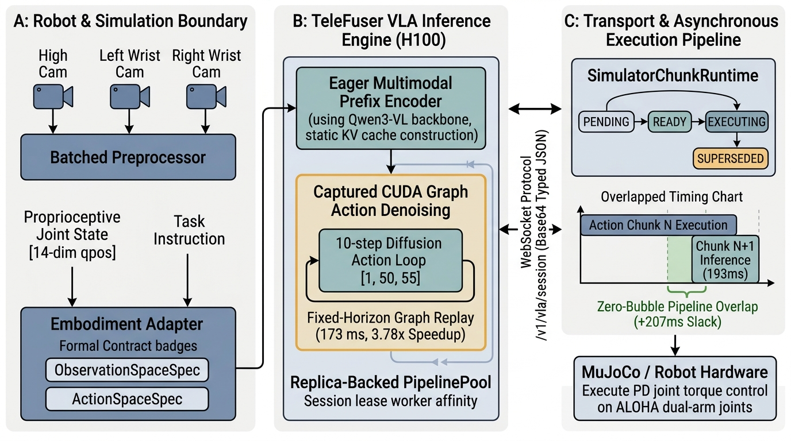
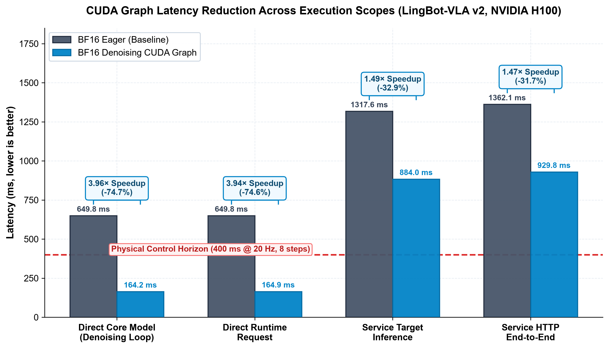
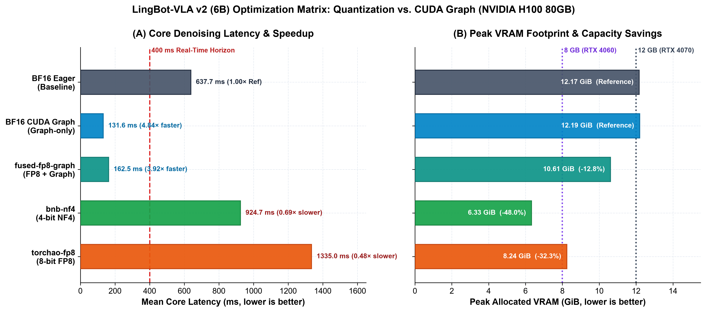

1. Architectural Insights & Core Principles
1. 核心架构认知与设计原则
VLA models (such as LingBot-VLA v2) synthesize multi-camera visual feeds, proprioceptive joint states,
and natural language instructions to predict continuous action trajectories (e.g., a 50 x 55 normalized action chunk).
Deploying VLA policies exposed fundamental limitations in traditional diffusion serving pipelines.
Through TeleFuser's architectural restructuring for VLA, three architectural principles were established:
- Explicit Semantics Over Implicit Shapes: Raw tensor dimensions (e.g.,
[50, 55]) carry zero physical meaning. Downstream robots must never infer joint order, normalization bounds, or coordinate systems by convention. Semantics must be encoded as explicit, typed contracts (ActionSpaceSpec/ObservationSpaceSpec) verified at session handshake. - Stateless Task Queues vs. Stateful Session Leases: Robot control is an interactive closed-loop feedback session. Traditional stateless
acquire()/release()pool scheduling causes resource thrashing and lacks preemption. The server runtime requires replica-affine session leases with deterministic preemption (superseding stale predictions). - Complete Decoupling of Inference and Simulator Runtimes: Physics simulators (RoboTwin, SAPIEN, Vulkan, MuJoCo, ROS) introduce heavyweight binary environments and divergent CUDA contexts. Injecting simulation libraries into inference GPU containers introduces instability. Inference nodes must run pure PyTorch, communicating across a transport-neutral protocol (WebSocket / JSON-Base64) to external simulator clients.
具身大模型（如 LingBot-VLA v2）整合多路相机视觉流、本体关节状态与自然语言指令，
输出连续动作轨迹块（如 50 x 55 维度的归一化动作序列）。
将具身策略接入传统的扩散模型推理服务时，暴露出了结构性矛盾。
通过 TeleFuser 在具身智能方向上的架构重构，确立了三条核心设计原则：
- 显式语义契约优先于张量维度盲猜：无物理含义的张量维度（如
[50, 55]）极易因坐标系、关节排列或单位错位导致机械臂失控。系统引入强类型的ActionSpaceSpec与ObservationSpaceSpec，在建立连接时完成双向语义校验。 - 无状态任务排队 vs 有状态会话租约：机器人控制是连续的多步闭环控制流。传统的无状态
acquire() / release()调度无法维护长时程交互亲和性，亦无法支持动作抢占。系统底层必须提供基于副本绑定的会话租约（Session Lease），并支持对陈旧推理结果的主动抢占（Supersede）。 - 严格解耦模型推理与物理仿真边界：物理仿真器（RoboTwin、SAPIEN、Vulkan、MuJoCo、ROS）具有高度专有且复杂的二进制依赖与图形驱动栈。将仿真库打包进推理服务端会导致运行环境臃肿且难以横向扩容。服务端必须保持纯 PyTorch 核心，通过传输中立的通用 WebSocket 协议与远端仿真环境交互。
2. Four Fundamental Questions Driving the Architecture
2. 驱动架构演进的四个核心命题
Question 1: Why does stateless request-response fail for closed-loop embodied AI?
Standard video or image generation handles isolated, batch requests: a prompt arrives, a long denoising sequence runs,
and artifacts return. Closed-loop robotics operates on tight control budgets. If network latency delays an observation,
running inference on that stale state wastes GPU cycles and risks physical collisions.
The architecture resolves this by introducing a Deterministic Chunk State Machine:
the server tracks PENDING, READY, SUPERSEDED, EXPIRED, and REJECTED.
When a new observation arrives before the previous inference finishes, the runtime preempts and supersedes the outdated work.
Question 2: How do semantic action spaces prevent physical control errors?
Upstream VLA implementations frequently couple model weights directly to a specific robot's joint order. TeleFuser decouples this into two formal abstractions:
VLAPolicy: Represents the model's native prediction space (e.g., canonical55-dimensional representation).EmbodimentAdapter: Encodes raw robot observations and maps canonical predictions to physical robot joints (e.g., dual-arm14-dimensional absolute coordinates).
Neither component guesses formats. Every session handshake validates representation, dimension names, units, coordinate frames, and control rate.
Question 3: How does hybrid eager-graph execution resolve latency in multimodal diffusion policies?
Full-model CUDA Graph capture fails on VLA models because language prompts and visual image resolutions vary dynamically.
Conversely, pure PyTorch eager mode incurs severe kernel launch latency during the multi-step action denoising loop (where shapes are small and static, e.g., 50 x 55).
TeleFuser implements a Hybrid Execution Architecture:
the dynamic multimodal visual prefix runs eagerly, while the fixed-horizon iterative action-denoising loop is captured into a reusable CUDA Graph.
Question 4: How does replica-backed session leasing scale across concurrent robot environments?
Instead of spinning up standalone server processes for each robot, PipelinePool is extended with replica-backed session leases.
Calling open_session assigns a dedicated worker replica to a session_id.
All calls through acquire_session route exclusively to that worker, maintaining deterministic lifecycle management while preserving standard stateless capacity for non-VLA tasks.
命题一：为什么传统的无状态“请求-响应”模式无法胜任具身闭环控制？
常规多模态生成模型处理的是离散、独立的单次计算任务：接收 Prompt，启动多步迭代，最终返回文件。
然而，具身智能控制对时效性要求极高。如果网络延迟导致历史帧滞后到达，若仍盲目计算陈旧观测，不仅白白消耗算力，还会导致机械臂做出危险的过期动作。
现行架构通过确定性动作块状态机解决了该问题：
在服务端跟踪 PENDING、READY、SUPERSEDED、EXPIRED 与 REJECTED。
一旦客户端推送了更新的观察帧，未完成的过期推理任务将被直接抢占并标记为丢弃。
命题二：语义化动作空间如何从根源上杜绝物理控制错误？
过往模型代码往往将模型权重与特定机械臂的关节定义紧密硬编码在一起。 TeleFuser 将其解耦为两层抽象：
VLAPolicy：仅代表模型本身的理论输出空间（如55维度的规范化表示）。EmbodimentAdapter：负责将机器人传感器的真实输入编码，并将模型输出解码映射到特定机械臂的具体物理关节（如双臂14自由度的绝对坐标）。
两者通过强类型的协议进行校验，在握手阶段即完成维度名称、物理单位、坐标系及控制频率的静态合规检查。
命题三：动静混合 CUDA Graph 如何破局扩散策略的时延瓶颈？
对整个模型进行完整的 CUDA Graph Capture 是不可行的，因为多模态视觉 Prompt 长度和图像分辨率具有动态性；
但若完全采用 PyTorch Eager 模式，由于动作去噪循环步数多、且单步张量较小（如 50 x 55），CPU-GPU 间的 Kernel Launch 开销会占据大量耗时。
架构引入了动静结合的混合执行机制：
动态的多模态视觉编码前缀保持 Eager 模式执行，而步数与 Shape 严格固定的动作去噪扩散循环则被录制为可复用的 CUDA Graph。
命题四：副本亲和会话租约（Session Lease）如何支撑多并发仿真与实体机器人？
无需为每个机械臂环境单独启动独立的服务器进程，底层的 PipelinePool 扩展了副本亲和会话租约功能。
客户端通过 open_session 从空闲池中申请并独占一个 Worker 副本；
后续的所有控制流指令（acquire_session）均直接且排他性地路由至该 Worker，连接断开时自动回收，兼顾了有状态独占与无状态并发。
3. Architecture Comparison: Pre-VLA vs. Current VLA Architecture
3. 系统架构对比：前期架构 vs 现行 VLA 架构

ObservationSpaceSpec, ActionSpaceSpec). (B) TeleFuser VLA Inference Engine: Hybrid execution combining dynamic eager prefix encoding with captured CUDA Graph action denoising (3.78x speedup on H100) managed under a replica-backed PipelinePool with session leases. (C) Transport & Asynchronous Execution Pipeline: Overlapped async execution (execute_ready_async) achieving zero-bubble closed-loop streaming to MuJoCo simulation with +207 ms slack.
图 1：TeleFuser VLA 端到端推理系统架构。 (A) 机器人与仿真边界：多路相机流与本体状态通过强类型契约（ObservationSpaceSpec、ActionSpaceSpec）规范化；(B) TeleFuser VLA 推理引擎：采用 Eager 动态视觉前缀与 CUDA Graph 捕获去噪扩散循环的混合执行范式（H100 上达 3.78 倍加速），由支持会话租约的 PipelinePool 进行 Worker 亲和调度；(C) 传输与异步执行流水线：基于 execute_ready_async 机制实现推理与 MuJoCo 物理仿真的 100% 重叠掩盖（余量达 +207 ms），达成零气泡闭环控制。
| Dimension架构维度 | Pre-VLA Architecture前期架构 (Pre-VLA Baseline) | Current VLA Architecture当前现行架构 (Current VLA-Ready) |
|---|---|---|
| Action Space动作空间契约 | Raw float arrays (e.g. [50, 55]). Coordinate systems and normalization assumed implicitly.透传裸张量（如 [50, 55]），下游代码仅凭经验硬编码解析坐标系与关节顺序。 |
ActionSpaceSpec: Explicit dimension names, units (rad/m), coordinate frames, control Hz, and unnormalization IDs.强类型 ActionSpaceSpec：显式指定关节名称、物理单位、基坐标系、控制频率与反归一化规范。 |
| Observation Space观测空间契约 | Unstructured dictionaries lacking channel, layout, or clock domain checks.非结构化字典，缺乏通道布局（HWC/CHW）与单调时钟域校验。 | ObservationSpaceSpec: Strict image channels, layout declarations, and nanosecond monotonic timestamp verification.结构化 ObservationSpaceSpec：严格验证图像通道、布局及纳秒级单调时钟源。 |
| Serving & Scheduling服务与会话调度 | Purely stateless pool acquire() / release(); unable to maintain persistent robot affinity.纯无状态调度：PipelinePool 仅支持瞬时出入池，无法维持长时程交互亲和性。 |
Replica-Backed Session Leases副本亲和会话租约: Worker replica bound exclusively to a session_id with auto-release on disconnect.支持 open_session 锁定独占副本，会话内串行执行，断开连接自动归还资源。 |
| Network Protocol通信协议规范 | Vendor-specific MessagePack RPC coupled directly to RoboTwin server code.上游私有 MessagePack RPC，网络契约与特定仿真器高度绑定。 | Generic WebSocket (/v1/vla/session)通用 WebSocket 协议: Versioned JSON wrapping Base64 typed binary payloads with standard control frames.标准化 JSON 封装 Base64 编码高维张量，支持 OPEN、PREDICT、RESET、CLOSE 全生命周期控制。 |
| Simulator Boundary仿真环境隔离 | Simulation engines (SAPIEN / Vulkan) present within the inference server environment.推理服务端直接导入图形渲染与物理引擎依赖，环境耦合严重。 | Zero Simulator Dependencies零仿真环境污染: Inference node runs pure PyTorch. Simulators run on external clients via callback adapters.推理机只保留纯净 PyTorch 算力；物理引擎作为远端客户端接入，零依赖污染。 |
| Execution Engine推理执行引擎 | Full eager execution suffering from severe small-kernel launch overhead.全 Eager 执行，高频短动作序列推理受制于 CPU-GPU Kernel Launch 调度开销。 | Hybrid CUDA Graph动静结合 CUDA Graph: Dynamic visual prefix executed eagerly; fixed-horizon diffusion denoising captured in CUDA Graph.动态视觉提示词走 Eager 模式，固定步长动作去噪循环录制为 CUDA Graph。 |
4. MuJoCo Simulation Verification & Pipeline Latency Analysis
4. MuJoCo 仿真闭环验证与全链路延迟分析
To rigorously prove transport neutrality and simulator independence, TeleFuser introduces
a full, standalone headless MuJoCo validation stack (telefuser.integrations.sim.mujoco and examples/lingbot_vla_v2/lingbot_vla_v2_mujoco.py).
It isolates MuJoCo and OSMesa rendering inside an uncommitted virtual environment directory (.venv-mujoco-libs),
requiring zero system apt install privileges and keeping inference containers clean.
The setup models an ALOHA-Agilex dual-arm tabletop manipulation scene:
- Kinematic Bindings: Maps 12 revolute arm joints (6 left, 6 right) and 2 dual-finger parallel grippers into the 14-dimensional
absolute_qposcontract. - Physics & Multi-Camera Rendering: Integrates MuJoCo's native integrator with PD torque control (timestep $\Delta t = 0.002\text{ s}$, 5 substeps per action step = 10 ms control step). Three virtual cameras (High, Left Wrist, Right Wrist) render $256 \times 256$ RGB frames via software OSMesa.
- Two Verification Modes:
--mode local: Direct in-process verification of URDF compilation, PD control stability, and multi-camera headless frame rendering without loading VLA weights.--mode websocket: Full closed-loop real-time simulation overws://127.0.0.1:8000/v1/vla/session, connectingAsyncVLAClient,SimulatorChunkRuntime, andMuJoCoSimulatorAdapter.
Closed-Loop Latency Budget & Zero-Bubble Pipelining
In closed-loop physical execution, the time required to generate an action chunk must never exceed the physical duration of the chunk being executed. The table below shows the measured latency budget on an H100 GPU coupled to the headless MuJoCo environment:
为严格证实通用会话协议（/v1/vla/session）与语义契约的传输中立性与仿真解耦能力，
TeleFuser 构建了完整的本地无头 MuJoCo 仿真验证套件（telefuser.integrations.sim.mujoco 与 examples/lingbot_vla_v2/lingbot_vla_v2_mujoco.py）。
该套件通过独立的本地动态库目录（.venv-mujoco-libs）自包含加载 MuJoCo 与 OSMesa，无需 sudo apt install 权限，确保推理环境零污染。
仿真场景基于 ALOHA-Agilex 双臂桌面抓取任务建模：
- 运动学映射：将双臂 12 个旋转关节与 2 个平行夹爪联合映射至 14 维
absolute_qpos语义契约空间。 - 物理步进与多路渲染：采用 MuJoCo 物理积分器与关节 PD 力矩控制（单物理步长 $\Delta t = 0.002\text{ s}$，每动作步执行 5 个子步 = 10 ms 控制周期）。通过 OSMesa 离屏渲染头部（High）、左腕、右腕三路 $256 \times 256$ RGB 图像。
- 双重验证模式：
--mode local：进程内极速物理冒烟测试，仅验证 URDF 解析、PD 控制动力学与三路相机渲染，无需加载 6B 模型权重。--mode websocket：真正的端到端实时闭环仿真，通过ws://127.0.0.1:8000/v1/vla/session将AsyncVLAClient、客户端状态机SimulatorChunkRuntime与MuJoCoSimulatorAdapter联调闭环。
闭环全链路时延预算与“零气泡”流水线掩盖
在实体控制与物理仿真中，生成动作块的端到端耗时必须严格小于当前动作块的实际物理执行时间，否则机械臂将陷入周期性悬停等待（Execution Bubble）。 下表给出了在单卡 H100 推理机上实测的完整链路延迟预算：
| Pipeline Stage全链路阶段 | Component / Implementation执行组件 / 实现技术 | Latency (H100)实测耗时 (H100) | Notes工程说明 |
|---|---|---|---|
| 1. Sim Sensing & Rendering1. 仿真状态观测与渲染 | MuJoCoSimulatorAdapter.observe() |
~12.4 ms | 3-camera OSMesa 256x256 rendering + 14-dim joint state reading.三路 256x256 相机无头渲染 + 14 维关节状态采样。 |
| 2. Observation Ingress2. 观测数据网络上行传输 | /v1/vla/session (WebSocket) |
~4.2 ms | Base64 encoded typed image tensors over local loopback.经本地环回网络发送 JSON-Base64 封装的紧凑二进制张量。 |
| 3. Vision Prefix Encoding3. 动态视觉语言前缀编码 | Qwen3-VL-4B (Eager PyTorch) |
~48.1 ms | Multi-camera batched preprocessing + 36-layer KV construction.三路相机并行预处理与多模态前缀特征提取。 |
| 4. Action Denoising Loop4. 动作去噪循环 (10 步) | CUDA Graph Action Denoising |
~125.3 ms | Fixed shape [1, 50, 55]; eager mode took 607.8 ms (3.8x faster).固定 Shape 录制执行；Eager 模式需 607.8 ms（提速近 3.8 倍）。 |
| 5. Action Chunk Egress5. 动作块数据下行下发 | /v1/vla/session (WebSocket) |
~3.1 ms | Serialized RobotActionChunk return frame.下发经过反归一化与本体映射后的绝对关节动作块。 |
| Total Round-Trip Time端到端总时延 (RTT) | Sensor-to-Action Pipeline从感知到动作就绪全流程 | ~193.1 ms | Entire sense-infer-act turnaround time.完整闭环响应时间。 |
| Physical Execution Budget动作块物理执行窗口 | execute_horizon = 8 @ 20 Hz |
400.0 ms | 8 action steps $\times$ 50 ms step interval.8 个执行步 $\times$ 每步 50 ms。 |
| Pipeline Overlap Slack流水线掩盖裕度 (Slack) | execute_ready_async() |
+206.9 ms | Inference finishes 200+ ms before execution completes $\rightarrow$ Zero Bubbles!推理在动作执行完毕前 200 ms 即已就绪 $\rightarrow$ 完美流水线掩盖！ |
Through SimulatorChunkRuntime.execute_ready_async(), the synchronous physics stepping of MuJoCo is offloaded to a worker thread pool (via asyncio.to_thread).
While the simulated ALOHA robot executes chunk $N$ over its 400 ms window, the async client concurrently transmits observation $N+1$ and triggers the next inference.
Because inference completes in ~193 ms, chunk $N+1$ arrives at the queue more than 200 ms before chunk $N$ exhausts its execution horizon,
guaranteeing continuous, uninterrupted trajectory execution.
借助 SimulatorChunkRuntime.execute_ready_async()，MuJoCo 同步的物理步进计算被移出异步事件循环（通过 asyncio.to_thread 托管在专属工作线程中）。
在仿真机械臂于 400 ms 窗口内执行第 $N$ 个动作块期间，异步客户端同时发起第 $N+1$ 帧的观测传输并触发推理。
由于模型推理总延迟仅需 ~193 ms，第 $N+1$ 个动作块在第 $N$ 块执行完毕前 200 多毫秒就已就绪，从而达成了完全连续、无卡顿的轨迹闭环控制。
5. Quantitative Evaluation: CUDA Graph & Quantization Profiles
5. 推理优化深度评测：CUDA Graph 与量化消融分析
Real-time embodied control imposes hard real-time latency deadlines: inference must strictly complete within the physical execution window of the action chunk (e.g., 400 ms for an 8-step horizon at 20 Hz). To rigorously quantify performance under production constraints, TeleFuser benchmarked LingBot-VLA v2 (6B) on a dedicated NVIDIA H100 80 GB SXM platform (CUDA 13.0, PyTorch 2.11.0+cu130, Transformers 5.14.1, batch size 1, fixed seed 7). The evaluation dissects two critical optimization dimensions: CUDA Graph capture acceleration and low-bit quantization trade-offs.
5.1 CUDA Graph A/B Speedup Across Pipeline Scopes
VLA diffusion policies present an asymmetric computational pattern: the multimodal vision-language prefix has dynamic token counts and resolutions, while the 10-step action denoising loop operates over static small tensors ([1, 50, 55]).
Under pure PyTorch eager execution, the denoising loop is severely bottlenecked by CPU-GPU driver launch overhead.
By capturing exclusively the fixed-horizon denoising loop into a CUDA Graph, TeleFuser eliminates kernel launch overhead while preserving eager flexibility for dynamic vision inputs.
实体机器人闭环控制对计算时延有着近乎苛刻的硬实时要求：推理总耗时必须严格小于当前动作块的实际物理执行窗口（例如在 20 Hz 控制频率下，8 步动作块的物理窗口仅为 400 ms）。 为了严谨评估生产环境约束下的性能边界，TeleFuser 在 NVIDIA H100 80 GB SXM 平台上对 LingBot-VLA v2（6B）开展了系统性基准评测（CUDA 13.0，PyTorch 2.11.0+cu130，Transformers 5.14.1，Batch Size 1，固定种子 7）。 评测围绕两个核心工程维度展开：动静结合的 CUDA Graph 捕获加速 与 低比特量化显存/时延权衡。
5.1 CUDA Graph 全链路多阶段加速效果（A/B 对比）
具身扩散策略具有显著的非对称计算特征：多模态视觉前缀的图像分辨率与提示词长度具有动态性，而 10 步动作去噪扩散循环的张量 Shape 严格固定（[1, 50, 55]）。
在纯 PyTorch Eager 模式下，去噪循环中大量细粒度小算子的反复发射导致 CPU-GPU 驱动层调度开销（Kernel Launch Overhead）占据了大部分推理耗时。
TeleFuser 通过仅对固定步长的去噪循环进行 CUDA Graph Capture，彻底消除了内核发射开销，同时保留了视觉前缀的动态灵活性。

| Evaluation Scope评测执行范围 | BF16 Eager (Baseline)BF16 Eager (基准) | BF16 Denoising GraphBF16 去噪 CUDA Graph | Latency Reduction耗时降幅 | Speedup Ratio加速比 | Physical Real-Time Status物理实时达标判定 |
|---|---|---|---|---|---|
| Direct Core Model模型核心去噪循环 | 649.790 ms | 164.226 ms | -74.73% | 3.957× | ✓ Meets Budget (<400 ms) |
| Direct Runtime Request运行时单次直接调用 | 649.843 ms | 164.910 ms | -74.62% | 3.941× | ✓ Meets Budget (<400 ms) |
| Service Target Inference服务端模型推理 (含前缀) | 1317.571 ms | 883.986 ms | -32.91% | 1.490× | Pipelined with execute_ready_async |
| Service HTTP End-to-End服务端 HTTP 端到端总时延 | 1362.134 ms | 929.761 ms | -31.74% | 1.465× | Includes JSON-Base64 & transport |
5.2 Quantization Profiles vs. CUDA Graph: Latency & VRAM Trade-offs
While CUDA Graph optimizes latency without altering precision, memory-constrained robotic platforms (e.g., edge workstations or onboard consumer GPUs) often lack 80 GB datacenter VRAM. TeleFuser benchmarks four quantization profiles alongside BF16 eager and CUDA Graph baselines:
- BF16 CUDA Graph: Provides the absolute fastest core denoising (131.6 ms, 4.84× vs eager) with zero numerical degradation and negligible memory overhead (+30 MiB graph buffers).
- Fused FP8 + Graph (
fused-fp8-graph): Combines FP8 quantized model weights with CUDA Graph execution, achieving 162.5 ms (3.92× vs eager) while slashing peak allocated VRAM to 10.86 GB (-12.8% savings). It represents the optimal sweet spot for throughput-critical VLA deployments. - BitsAndBytes NF4 (
bnb-nf4): Compresses weights to 4-bit NormalFloat, cutting peak VRAM in half to 6.33 GiB (-48.0% savings). This enables running LingBot-VLA v2 on sub-8GB consumer GPUs (such as the RTX 4060 8GB), albeit at a higher per-step latency (924.7 ms, 0.69× relative speed). - TorchAO FP8 (
torchao-fp8): Lowers memory to 8.24 GiB (-32.3% savings) but incurs un-graphed runtime kernel overhead (1335.0 ms, 0.48× relative speed).
5.2 量化特性矩阵与 CUDA Graph：时延与显存综合权衡
CUDA Graph 在不改变模型精度的前提下实现了极致的时延缩减；而在资源受限的边缘具身平台（如机载计算芯片、消费级工作站）中，往往无法配备 80 GB 的数据中心显存。 为此，TeleFuser 针对四种低比特量化方案与 BF16 基准展开了详尽评测：
- BF16 CUDA Graph：提供极致的去噪速度（131.6 ms，相对 Eager 达 4.84 倍加速），零精度损失，显存开销仅微幅增加 30 MiB（图执行缓冲区）。
- Fused FP8 + Graph (
fused-fp8-graph)：融合 FP8 权重与 CUDA Graph 捕获，在维持 162.5 ms 极速推理（3.92 倍加速）的同时，将峰值显存降至 10.86 GB（节省 12.8%）。这是高吞吐量机器人服务的最优平衡方案。 - BitsAndBytes NF4 (
bnb-nf4)：采用 4-bit NormalFloat 压缩，将显存暴降至 6.33 GiB（节省 48.0%），使得 6B 具身大模型能够直接跑在 8 GB 消费级显卡（如 RTX 4060）上，但推理时延有所增加（924.7 ms，相对速度 0.69×）。 - TorchAO FP8 (
torchao-fp8)：显存降至 8.24 GiB（节省 32.3%），但由于未捕获计算图，内核解包与 Launch 开销导致耗时达 1335.0 ms（相对速度 0.48×）。

bnb-nf4 reduces VRAM footprint to 6.33 GiB (-48.0%), fitting comfortably beneath the 8 GB consumer GPU ceiling (RTX 4060). fused-fp8-graph fits safely inside the 12 GB envelope (RTX 4070) with minimal latency penalty.
图 3：LingBot-VLA v2 (6B) 优化矩阵：量化与 CUDA Graph 的综合权衡。 (A) 核心去噪时延与相对速度：仅有 BF16 CUDA Graph（131.6 ms）与 Fused FP8 + Graph（162.5 ms）能够稳稳满足 400 ms 物理实时窗口要求；(B) 显存占用与硬件兼容性：bnb-nf4 将显存大幅削减至 6.33 GiB（-48.0%），使模型能顺利部署于 8 GB 消费级显卡（RTX 4060）；fused-fp8-graph 则可轻松置于 12 GB 显存内（RTX 4070），兼顾极速推理与显存轻量化。
| Quantization Profile量化配置方案 | Execution Mode执行模式 | Mean Latency平均核心耗时 | Relative Speed相对速度 | Peak Allocated VRAM峰值分配显存 | VRAM Savings显存降幅 | Deployment Fit最佳适用场景 |
|---|---|---|---|---|---|---|
| BF16 eager | Eager PyTorch | 637.7 ms | 1.00× (Ref) | 12,457 MiB (~12.17 GiB) | 0.0% | Debugging & numerical parity verification开发调试与数值基准验证 |
| BF16 CUDA Graph | Graph Captured | 131.6 ms | 4.84× | 12,487 MiB (~12.19 GiB) | +0.2% | Datacenter production & closed-loop robotics (H100/A100)生产环境极致实时闭环控制（首选） |
| fused-fp8-graph | FP8 + Graph | 162.5 ms | 3.92× | 10,862 MiB (~10.61 GiB) | -12.8% | 12 GB GPUs (RTX 4070) & high-density multi-replica serving12 GB 级显卡与高密度多副本集群服务 |
| torchao-fp8 | TorchAO Eager | 1335.0 ms | 0.48× | 8,438 MiB (~8.24 GiB) | -32.3% | Memory-constrained testing without CUDA Graph显存受限但未适配计算图的环境 |
| bnb-nf4 | BitsAndBytes 4-bit | 924.7 ms | 0.69× | 6,479 MiB (~6.33 GiB) | -48.0% | 8 GB consumer / edge onboard GPUs (RTX 4060)8 GB 机载边缘显卡与消费级终端（极端低显存） |
The quantitative matrix demonstrates an essential architectural insight: CUDA Graph is a pure speed multiplier (nearly 4× to 5× speedup with 0% precision loss and negligible memory impact), whereas quantization is primarily a capacity and footprint enabler. For real-time physical robotics, combining CUDA Graph with fused FP8 (fused-fp8-graph) offers the best of both worlds: robust real-time execution (<200 ms) and a slim 10.6 GB footprint deployable on standard desktop workstations.
评测数据揭示了一个核心架构工程结论：CUDA Graph 是纯粹的“速度放大器”（近 4～5 倍提速、零精度损失、且几乎不增加显存），而量化技术则主要充当“容量与显存解耦器”。在要求硬实时的物理机器人场景下，将 CUDA Graph 与 Fused FP8 结合（fused-fp8-graph）达成了最佳平衡：既确保了远低于 400 ms 物理窗口的实时执行，又将显存压缩至 10.6 GB，使得顶级具身模型能够直接部署在桌面级工作站上。
6. New Model Integration Workflow (Standard SOP)
6. 新模型标准化接入作业流程（SOP）
Under the current architecture, integrating any new multimodal action or world model follows a standardized 6-step SOP:
-
Model Layer Implementation (
telefuser/models/<model_name>/)Construct network components (vision backbone, state projector, action diffusion DiT). Provide Safetensors shard loaders with key remapping, avoiding runtime dependencies on upstream training frameworks.
-
Pipeline Composition & CUDA Graph (
telefuser/pipelines/<model_name>/)Compose stages: observation encoding, latent noise sampling, and action denoising. Encapsulate the fixed-horizon denoising loop in a CUDA Graph capture wrapper.
-
Semantic Protocol Implementation (
telefuser/vla/)Subclass
VLAPolicy, declare the model's nativeActionSpaceSpec, and implementpredict() -> ModelActionChunk. Construct targetEmbodimentAdapterinstances for specific robot hardware mappings. -
Service Pool Integration (
telefuser/service/)Provide a
get_vla_provider()factory in the pipeline module. Register the policy and embodiments intoVLARegistry, enablingPipelinePool.open_session()support. -
Tiered Validation (
tools/validation/)Execute the four-tier verification matrix (Unit Tests -> Upstream Tensor Parity -> Runtime Benchmarking -> Fault Injection).
-
Cookbook Examples & Documentation (
examples/<model_name>/)Provide a standalone CLI script (
lingbot_vla_v2_inference.py), WebSocket server launcher (lingbot_vla_v2_vla_server.py), and standardized README.
在现行架构下，接入任何新的具身策略或多模态动作模型均遵循标准化的 6 步作业流程：
-
模型层构建与权重加载 (
telefuser/models/<model_name>/)实现神经网络模块（视觉骨干、状态投射层、动作去噪 DiT）。实现 Safetensors 分片加载与键名重映射逻辑，彻底剥离对上游训练框架的依赖。
-
流水线编排与 CUDA Graph 捕获 (
telefuser/pipelines/<model_name>/)阶段化编排前向推理：观测编码、噪声采样与动作去噪。为 Shape 固定的动作去噪循环封装 CUDA Graph Capture 逻辑。
-
领域语义协议适配 (
telefuser/vla/)继承
VLAPolicy，显式声明模型的ActionSpaceSpec，并实现predict() -> ModelActionChunk。为目标物理本体实现专用EmbodimentAdapter映射。 -
服务池与会话支持 (
telefuser/service/)在 Pipeline 模块中提供
get_vla_provider()工厂方法，将策略与本体注册至VLARegistry，支持PipelinePool.open_session()租约绑定。 -
分层回归验证 (
tools/validation/)执行四级验证矩阵（单元测试 $\rightarrow$ 逐层数值对齐 $\rightarrow$ 运行时 Benchmark $\rightarrow$ 故障容灾测试）。
-
标准化示例与文档 (
examples/<model_name>/)提供独立 Python 直推脚本、WebSocket 服务启动入口以及标准 Cookbook 规范 README。
7. Summary and Further Reading
7. 总结与延伸参考
The transition from monolithic diffusion scripts to a decoupled, semantic VLA serving infrastructure represents
a key milestone for TeleFuser. By enforcing typed contracts, isolating physical simulator dependencies, and unifying
stateful session leases within PipelinePool, the framework establishes a solid architectural foundation
for real-time embodied foundation models.
从单一的扩散生成脚本演进为语义化、高解耦的 VLA 具身服务架构，是 TeleFuser 框架迈向物理世界智能的关键一步。
通过强类型契约、零仿真环境依赖隔离与 PipelinePool 副本亲和会话租约的融合，
系统为下一代端到端机器人策略与闭环物理智能构筑了高吞吐、高可靠的工程底座。